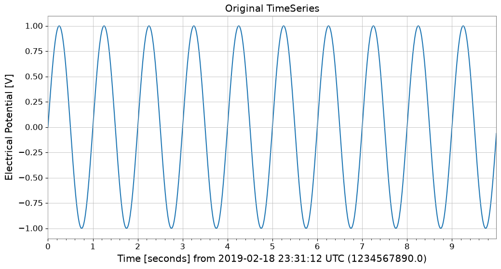
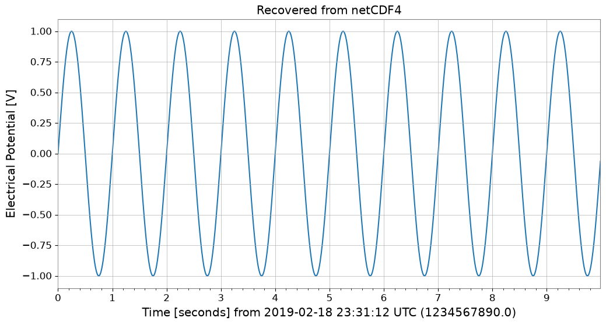
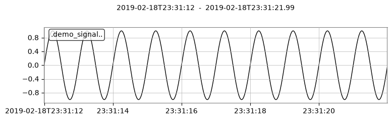
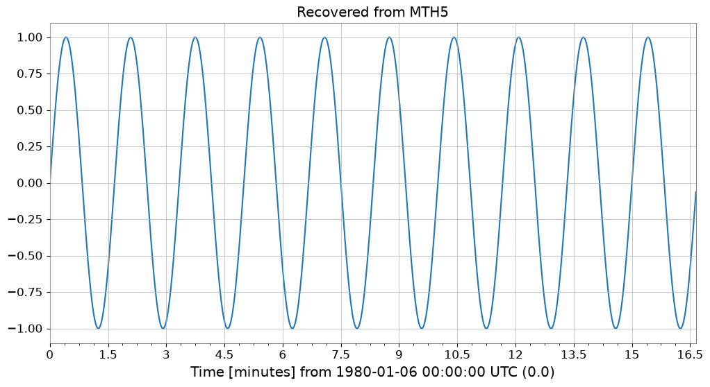

相互運用: 基本#
このノートブックでは、gwexpy の TimeSeries クラスに追加された新しい相互運用機能 (Interoperability Features) を紹介します。 gwexpy は、Pandas, Xarray, PyTorch, Astropy などの一般的なデータサイエンス・ライブラリとの間で、シームレスにデータを変換することができます。
gwexpy[all] はチュートリアル環境で使う宣言済み extra をまとめて導入しますが、すべての public interop backend を導入するものではありません。ROOT, torch, TensorFlow, JAX, PyCBC, Finesse などの個別 backend は、その bridge を使うときに直接導入してください。
目次#
汎用データ形式とデータ基盤
1.1. NumPy [Original GWpy]
1.2. Pandas との連携 [Original GWpy]
1.3. Polars [GWexpy New]
1.4. Xarray との連携 [Original GWpy]
1.5. Dask との連携 [GWexpy New]
1.6. JSON / Python Dict (to_json) (to_json) [GWexpy New]
データベースとストレージ層
2.1. HDF5 [Original GWpy]
2.2. SQLite [GWexpy New]
2.3. Zarr [GWexpy New]
2.4. netCDF4 [GWexpy New]
計算機科学・機械学習・高速計算
3.1. PyTorch との連携 [GWexpy New]
3.2. CuPy (CUDA 加速) [GWexpy New]
3.3. TensorFlow との連携 [GWexpy New]
3.4. JAX との連携 [GWexpy New]
天文学と重力波物理
4.1. PyCBC / LAL [Original GWpy]
4.2. Astropy との連携 [Original GWpy]
4.3. Specutils との連携 [GWexpy New]
4.4. Pyspeckit との連携 [GWexpy New]
素粒子物理・高エネルギー物理
5.1. CERN ROOT との連携 [GWexpy New]
5.2. ROOT オブジェクトからの復元 (
from_root)
地球物理・地震学・電磁気
6.1. ObsPy [Original GWpy]
6.2. SimPEG との連携 [GWexpy New]
6.3. MTH5 / MTpy [GWexpy New]
音響・オーディオ解析
7.1. Librosa / Pydub [GWexpy New]
医療・生体信号解析
8.1. MNE-Python [GWexpy New]
8.2. Elephant / quantities との連携 [GWexpy New]
8.3. Neo [GWexpy New]
まとめ
import warnings
warnings.filterwarnings("ignore", category=UserWarning)
warnings.filterwarnings("ignore", category=DeprecationWarning)
import os
os.environ.setdefault("TF_CPP_MIN_LOG_LEVEL", "3")
'3'
import warnings
with warnings.catch_warnings():
warnings.simplefilter('ignore')
import matplotlib.pyplot as plt
import numpy as np
from astropy import units as u
from gwpy.time import LIGOTimeGPS
from gwexpy.timeseries import TimeSeries
# Create sample data
# Generate a 10-second, 100Hz sine wave
rate = 100 * u.Hz
dt = 1 / rate
t0 = LIGOTimeGPS(1234567890, 0)
duration = 10 * u.s
size = int(rate * duration)
times = np.arange(size) * dt.value
data = np.sin(2 * np.pi * 1.0 * times) # 1Hz sine wave
ts = TimeSeries(data, t0=t0, dt=dt, unit="V", name="demo_signal")
print("Original TimeSeries:")
print(ts)
ts.plot(title="Original TimeSeries");
Original TimeSeries:
TimeSeries([ 0. , 0.06279052, 0.12533323, ...,
-0.18738131, -0.12533323, -0.06279052],
unit: V,
t0: 1234567890.0 1 / Hz,
dt: 0.01 1 / Hz,
name: demo_signal,
channel: None)

1. 汎用データ形式・データ基盤#
1.1. NumPy [Original GWpy]#
NumPy：NumPy は Python における数値計算の基盤ライブラリで、多次元配列と高速な数学演算を提供します。📚 NumPy ドキュメント
TimeSeries.value や np.asarray(ts) で NumPy 配列を取得できます。
1.2. Pandas との連携 [Original GWpy]#
Pandas：Pandas はデータ分析と操作のための強力なライブラリで、DataFrame と Series による柔軟なデータ構造を提供します。📚 Pandas ドキュメント
to_pandas() メソッドを使うと、TimeSeries を pandas.Series に変換できます。 インデックスは datetime (UTC), gps, seconds (Unix timestamp) から選択可能です。
try:
# Convert to Pandas Series (default is datetime index)
s_pd = ts.to_pandas(index="datetime")
print("\n--- Converted to Pandas Series ---")
display(s_pd)
fig, ax = plt.subplots()
s_pd.plot(ax=ax, title="Pandas Series")
plt.show()
plt.close(fig)
# Restore TimeSeries from Pandas Series
ts_restored = TimeSeries.from_pandas(s_pd, unit="V")
print("\n--- Restored TimeSeries from Pandas ---")
print(ts_restored)
del s_pd, ts_restored
except ImportError:
print("Pandas is not installed.")
--- Converted to Pandas Series ---
time_utc
2019-02-18 23:31:49+00:00 0.000000
2019-02-18 23:31:49.010000+00:00 0.062791
2019-02-18 23:31:49.020000+00:00 0.125333
2019-02-18 23:31:49.030000+00:00 0.187381
2019-02-18 23:31:49.040000+00:00 0.248690
...
2019-02-18 23:31:58.949991+00:00 -0.309017
2019-02-18 23:31:58.959991+00:00 -0.248690
2019-02-18 23:31:58.969990+00:00 -0.187381
2019-02-18 23:31:58.979990+00:00 -0.125333
2019-02-18 23:31:58.989990+00:00 -0.062791
Name: demo_signal, Length: 1000, dtype: float64

--- Restored TimeSeries from Pandas ---
TimeSeries([ 0. , 0.06279052, 0.12533323, ...,
-0.18738131, -0.12533323, -0.06279052],
unit: V,
t0: 1234567927.0 s,
dt: 0.009999990463256836 s,
name: demo_signal,
channel: None)
1.3. Polars [GWexpy New]#
Polars：Polars は Rust で実装された高性能な DataFrame ライブラリで、大規模データ処理に優れます。📚 Polars ドキュメント
to_polars() で Polars DataFrame/Series に変換できます。
try:
import polars as pl
_ = pl
# TimeSeries -> Polars DataFrame
df_pl = ts.to_polars()
print("--- Polars DataFrame ---")
print(df_pl.head())
# Plot using Polars/Matplotlib
plt.figure()
data_col = [c for c in df_pl.columns if c != "time"][0]
plt.plot(df_pl["time"], df_pl[data_col])
plt.title("Polars Data Plot")
plt.show()
# Recover to TimeSeries
from gwexpy.timeseries import TimeSeries
ts_recovered = TimeSeries.from_polars(df_pl)
print("Recovered from Polars:", ts_recovered)
del df_pl, ts_recovered
except ImportError:
print("Polars not installed.")
Polars not installed.
1.4. Xarray との連携 [Original GWpy]#
xarray：xarray は多次元ラベル付き配列のためのライブラリで、NetCDF データの操作や気象・地球科学データの解析に広く使われます。📚 xarray ドキュメント
xarray は多次元のラベル付き配列を扱う強力なライブラリです。to_xarray() でメタデータを保持したまま変換できます。
try:
# Convert to Xarray DataArray
da = ts.to_xarray()
print("\n--- Converted to Xarray DataArray ---")
print(da)
# Verify metadata (attrs) is preserved
print("Attributes:", da.attrs)
da.plot()
plt.title("Xarray DataArray")
plt.show()
plt.close()
# Restore
ts_x = TimeSeries.from_xarray(da)
print("\n--- Restored TimeSeries from Xarray ---")
print(ts_x)
del da, ts_x
except ImportError:
print("Xarray is not installed.")
--- Converted to Xarray DataArray ---
<xarray.DataArray 'demo_signal' (time: 1000)> Size: 8kB
array([ 0. , 0.06279052, 0.12533323, ..., -0.18738131,
-0.12533323, -0.06279052], shape=(1000,))
Coordinates:
* time (time) datetime64[us] 8kB 2019-02-18T23:31:49 ... 2019-02-18T23:...
Attributes:
unit: V
epoch: 1234567890.0
time_coord: datetime
name: demo_signal
Attributes: {'unit': 'V', 'epoch': 1234567890.0, 'time_coord': 'datetime', 'name': 'demo_signal'}

--- Restored TimeSeries from Xarray ---
TimeSeries([ 0. , 0.06279052, 0.12533323, ...,
-0.18738131, -0.12533323, -0.06279052],
unit: V,
t0: 1234567927.0 s,
dt: 0.009999990463256836 s,
name: demo_signal,
channel: None)
1.5. Dask との連携 [GWexpy New]#
Dask：Dask は並列計算のためのライブラリで、NumPy/Pandas を超える大規模データの処理を可能にします。📚 Dask ドキュメント
try:
import dask.array as da
_ = da
# Convert to Dask Array
dask_arr = ts.to_dask(chunks="auto")
print("\n--- Converted to Dask Array ---")
print(dask_arr)
# Restore (compute=True loads immediately)
ts_from_dask = TimeSeries.from_dask(dask_arr, t0=ts.t0, dt=ts.dt, unit=ts.unit)
print("Recovered from Dask:", ts_from_dask)
del dask_arr, ts_from_dask
except ImportError:
print("Dask not installed.")
--- Converted to Dask Array ---
dask.array<array, shape=(1000,), dtype=float64, chunksize=(1000,), chunktype=numpy.ndarray>
Recovered from Dask: TimeSeries([ 0. , 0.06279052, 0.12533323, ...,
-0.18738131, -0.12533323, -0.06279052],
unit: V,
t0: 1234567890.0 1 / Hz,
dt: 0.01 1 / Hz,
name: None,
channel: None)
1.6. JSON / Python Dict (to_json) [GWexpy New]#
JSON：JSON（JavaScript Object Notation）は軽量なデータ交換形式で、Python 標準ライブラリでサポートされています。📚 JSON ドキュメント
to_json() や to_dict() で JSON 互換の辞書形式を出力できます。
import json
# TimeSeries -> JSON string
ts_json = ts.to_json()
print("--- JSON Representation (Partial) ---")
print(ts_json[:500] + "...")
# Plot data by loading back from JSON
ts_dict_temp = json.loads(ts_json)
plt.figure()
plt.plot(ts_dict_temp["data"])
plt.title("Plot from JSON Data")
plt.show()
# Recover from JSON
from gwexpy.timeseries import TimeSeries
ts_recovered = TimeSeries.from_json(ts_json)
print("Recovered from JSON:", ts_recovered)
del ts_json, ts_dict_temp, ts_recovered
--- JSON Representation (Partial) ---
{
"t0": 1234567890.0,
"dt": 0.01,
"unit": "V",
"name": "demo_signal",
"channel": null,
"data": [
0.0,
0.06279051952931337,
0.12533323356430426,
0.1873813145857246,
0.2486898871648548,
0.3090169943749474,
0.3681245526846779,
0.4257792915650727,
0.4817536741017153,
0.5358267949789967,
0.5877852522924731,
0.6374239897486896,
0.6845471059286886,
0.7289686274214116,
0.7705132427757893,
0.8090169943749475,
0.84432792550201...

Recovered from JSON: TimeSeries([ 0. , 0.06279052, 0.12533323, ...,
-0.18738131, -0.12533323, -0.06279052],
unit: V,
t0: 1234567890.0 s,
dt: 0.01 s,
name: demo_signal,
channel: None)
2. データベース・ストレージ層#
2.1. HDF5 [Original GWpy]#
HDF5：HDF5 は大規模な科学データを効率的に保存・管理するための階層的データ形式です。Python からは h5py ライブラリ経由でアクセスできます。📚 HDF5 ドキュメント
to_hdf5_dataset() で HDF5 への保存をサポート。
try:
import tempfile
import h5py
with tempfile.NamedTemporaryFile(suffix=".h5") as tmp:
# TimeSeries -> HDF5
with h5py.File(tmp.name, "w") as f:
ts.to_hdf5_dataset(f, "dataset_01")
# Read back and display
with h5py.File(tmp.name, "r") as f:
ds = f["dataset_01"]
print("--- HDF5 Dataset Info ---")
print(f"Shape: {ds.shape}, Dtype: {ds.dtype}")
print("Attributes:", dict(ds.attrs))
# Recover
from gwexpy.timeseries import TimeSeries
ts_recovered = TimeSeries.from_hdf5_dataset(f, "dataset_01")
print("Recovered from HDF5:", ts_recovered)
ts_recovered.plot()
plt.title("Recovered from HDF5")
plt.show()
del ds, ts_recovered
except ImportError:
print("h5py not installed.")
--- HDF5 Dataset Info ---
Shape: (1000,), Dtype: float64
Attributes: {'dt': np.float64(0.01), 'name': 'demo_signal', 't0': np.float64(1234567890.0), 'unit': 'V'}
Recovered from HDF5: TimeSeries([ 0. , 0.06279052, 0.12533323, ...,
-0.18738131, -0.12533323, -0.06279052],
unit: V,
t0: 1234567890.0 s,
dt: 0.01 s,
name: demo_signal,
channel: None)

2.2. SQLite [GWexpy New]#
SQLite：SQLite は軽量な組み込み型 SQL データベースエンジンで、Python 標準ライブラリに含まれています。📚 SQLite ドキュメント
to_sqlite() で DB 永続化をサポート。
import sqlite3
conn = sqlite3.connect(":memory:")
# TimeSeries -> SQLite
series_id = ts.to_sqlite(conn, series_id="test_series")
print(f"Saved to SQLite with ID: {series_id}")
# Verify data in SQL
cursor = conn.cursor()
row = cursor.execute("SELECT * FROM series WHERE series_id=?", (series_id,)).fetchone()
print("Metadata from SQL:", row)
# Recover
from gwexpy.timeseries import TimeSeries
ts_recovered = TimeSeries.from_sqlite(conn, series_id)
print("Recovered from SQLite:", ts_recovered)
ts_recovered.plot()
plt.title("Recovered from SQLite")
plt.show()
del series_id, conn, cursor, ts_recovered
Saved to SQLite with ID: test_series
Metadata from SQL: ('test_series', '', 'V', 1234567890.0, 0.01, 1000, '{"name": "demo_signal"}')
Recovered from SQLite: TimeSeries([ 0. , 0.06279052, 0.12533323, ...,
-0.18738131, -0.12533323, -0.06279052],
unit: V,
t0: 1234567890.0 s,
dt: 0.01 s,
name: test_series,
channel: None)

2.3. Zarr [GWexpy New]#
Zarr：Zarr はチャンク化・圧縮された多次元配列のためのストレージ形式で、クラウドストレージとの統合に優れます。📚 Zarr ドキュメント
to_zarr() でクラウドストレージ向き形式に対応。
try:
import os
import tempfile
import zarr
with tempfile.TemporaryDirectory() as tmpdir:
store_path = os.path.join(tmpdir, "test.zarr")
# TimeSeries -> Zarr
ts.to_zarr(store_path, path="timeseries")
# Read back
z = zarr.open(store_path, mode="r")
ds = z["timeseries"]
print("--- Zarr Array Info ---")
print(ds.info)
# Recover
from gwexpy.timeseries import TimeSeries
ts_recovered = TimeSeries.from_zarr(store_path, "timeseries")
print("Recovered from Zarr:", ts_recovered)
ts_recovered.plot()
plt.title("Recovered from Zarr")
plt.show()
del z, ds, ts_recovered
except ImportError:
print("zarr not installed.")
--- Zarr Array Info ---
Type : Array
Zarr format : 3
Data type : Float64(endianness='little')
Fill value : 0.0
Shape : (1000,)
Chunk shape : (1000,)
Order : C
Read-only : True
Store type : LocalStore
Filters : ()
Serializer : BytesCodec(endian=<Endian.little: 'little'>)
Compressors : (ZstdCodec(level=0, checksum=False),)
No. bytes : 8000 (7.8K)
Recovered from Zarr: TimeSeries([ 0. , 0.06279052, 0.12533323, ...,
-0.18738131, -0.12533323, -0.06279052],
unit: V,
t0: 1234567890.0 s,
dt: 0.01 s,
name: demo_signal,
channel: None)

2.4. netCDF4 [GWexpy New]#
netCDF4：netCDF4 は気象・海洋・地球科学データの標準形式で、自己記述的なデータ構造を持ちます。📚 netCDF4 ドキュメント
to_netcdf4() で気象・海洋データの標準に対応。
try:
import tempfile
from pathlib import Path
import netCDF4
with tempfile.TemporaryDirectory() as tmpdir:
path = Path(tmpdir) / "gwexpy_timeseries.nc"
# TimeSeries -> netCDF4
with netCDF4.Dataset(path, "w", format="NETCDF3_CLASSIC") as ds:
ts.to_netcdf4(ds, "my_signal")
# Read back
with netCDF4.Dataset(path, "r") as ds:
v = ds.variables["my_signal"]
print("--- netCDF4 Variable Info ---")
print(v)
# Recover
from gwexpy.timeseries import TimeSeries
ts_recovered = TimeSeries.from_netcdf4(ds, "my_signal")
print("Recovered from netCDF4:", ts_recovered)
ts_recovered.plot()
plt.title("Recovered from netCDF4")
plt.show()
del v, ts_recovered
except ImportError:
print("netCDF4 not installed.")
<frozen importlib._bootstrap>:241: RuntimeWarning: numpy.ndarray size changed, may indicate binary incompatibility. Expected 16 from C header, got 96 from PyObject
--- netCDF4 Variable Info ---
<class 'netCDF4.Variable'>
float64 my_signal(time)
t0: 1234567890.0
dt: 0.01
units: V
long_name: demo_signal
unlimited dimensions:
current shape = (1000,)
filling on, default _FillValue of 9.969209968386869e+36 used
Recovered from netCDF4: TimeSeries([ 0. , 0.06279052, 0.12533323, ...,
-0.18738131, -0.12533323, -0.06279052],
unit: V,
t0: 1234567890.0 s,
dt: 0.01 s,
name: demo_signal,
channel: None)

3. 情報科学・機械学習・加速計算#
3.1. PyTorch との連携 [GWexpy New]#
PyTorch：PyTorch は動的計算グラフと GPU 高速化をサポートするディープラーニングフレームワークです。📚 PyTorch ドキュメント
ディープラーニングの前処理として、TimeSeries を直接 torch.Tensor に変換できます。GPU転送も可能です。
import os
os.environ.setdefault("TF_CPP_MIN_LOG_LEVEL", "3")
try:
import torch
# Convert to PyTorch Tensor
tensor = ts.to_torch(dtype=torch.float32)
print("\n--- Converted to PyTorch Tensor ---")
print(f"Tensor shape: {tensor.shape}, dtype: {tensor.dtype}")
# Restore from Tensor (t0, dt must be specified separately)
ts_torch = TimeSeries.from_torch(tensor, t0=ts.t0, dt=ts.dt, unit="V")
print("\n--- Restored from Torch ---")
print(ts_torch)
del tensor, ts_torch
except ImportError:
print("PyTorch is not installed.")
PyTorch is not installed.
3.2. CuPy (CUDA 加速) [GWexpy New]#
CuPy：CuPy は NumPy 互換の GPU 配列ライブラリで、NVIDIA CUDA を用いた高速計算を可能にします。📚 CuPy ドキュメント
GPU 上での計算を可能にする CuPy 配列へ変換できます。
from gwexpy.interop import is_cupy_available
if is_cupy_available():
import cupy as cp
# TimeSeries -> CuPy
y_gpu = ts.to_cupy()
print("--- CuPy Array (on GPU) ---")
print(y_gpu)
# Simple processing on GPU
y_gpu_filt = y_gpu * 2.0
# Plot (must move to CPU for plotting)
plt.figure()
plt.plot(cp.asnumpy(y_gpu_filt))
plt.title("CuPy Data (Moved to CPU for plot)")
plt.show()
# Recover
from gwexpy.timeseries import TimeSeries
ts_recovered = TimeSeries.from_cupy(y_gpu_filt, t0=ts.t0, dt=ts.dt)
print("Recovered from CuPy:", ts_recovered)
del y_gpu, y_gpu_filt, ts_recovered
else:
print("CuPy or CUDA driver not available.")
CuPy or CUDA driver not available.
3.3. TensorFlow との連携 [GWexpy New]#
TensorFlow：TensorFlow は Google が開発した機械学習プラットフォームで、大規模な本番環境に優れます。📚 TensorFlow ドキュメント
import warnings
with warnings.catch_warnings():
warnings.simplefilter('ignore')
try:
import os
os.environ.setdefault("TF_CPP_MIN_LOG_LEVEL", "3")
warnings.filterwarnings("ignore", category=UserWarning, module=r"google\.protobuf\..*")
warnings.filterwarnings("ignore", category=UserWarning, message=r"Protobuf gencode version.*")
import tensorflow as tf
_ = tf
# Convert to TensorFlow Tensor
tf_tensor = ts.to_tensorflow()
print("\n--- Converted to TensorFlow Tensor ---")
print(f"Tensor shape: {tf_tensor.shape}")
print(f"Tensor dtype: {tf_tensor.dtype}")
# Restore
ts_from_tensorflow = TimeSeries.from_tensorflow(
tf_tensor, t0=ts.t0, dt=ts.dt, unit=ts.unit
)
print("Recovered from TF:", ts_from_tensorflow)
del tf_tensor, ts_from_tensorflow
except ImportError:
pass
3.4. JAX との連携 [GWexpy New]#
JAX：JAX は Google が開発した高性能な数値計算ライブラリで、自動微分と XLA コンパイルによる高速化を特徴とします。📚 JAX ドキュメント
try:
import os
os.environ["XLA_PYTHON_CLIENT_PREALLOCATE"] = "false"
import jax
_ = jax
import jax.numpy as jnp
_ = jnp
# Convert to JAX Array
jax_arr = ts.to_jax()
print("\n--- Converted to JAX Array ---")
print(f"Array shape: {jax_arr.shape}")
# Restore
ts_from_jax = TimeSeries.from_jax(jax_arr, t0=ts.t0, dt=ts.dt, unit=ts.unit)
print("Recovered from JAX:", ts_from_jax)
del jax_arr, ts_from_jax
except ImportError:
print("JAX not installed.")
JAX not installed.
4. 天文学・重力波物理学#
4.1. PyCBC / LAL [Original GWpy]#
LAL：LAL（LIGO Algorithm Library）は LIGO/Virgo の公式解析ライブラリで、重力波解析の基盤を提供します。📚 LAL ドキュメント
PyCBC：PyCBC は重力波データ解析のためのライブラリで、信号探索やパラメータ推定に使われます。📚 PyCBC ドキュメント
重力波解析の標準ツールとの互換性を備えています。
4.2. Astropy との連携 [Original GWpy]#
Astropy：Astropy は天文学のための Python ライブラリで、座標変換、時系変換、単位系などをサポートします。📚 Astropy ドキュメント
天文学分野で標準的な astropy.timeseries.TimeSeries との相互変換もサポートしています。
try:
# Convert to Astropy TimeSeries
ap_ts = ts.to_astropy_timeseries()
print("\n--- Converted to Astropy TimeSeries ---")
print(ap_ts[:5])
fig, ax = plt.subplots()
ax.plot(ap_ts.time.jd, ap_ts["value"])
plt.title("Astropy TimeSeries")
plt.show()
plt.close()
# Restore
ts_astro = TimeSeries.from_astropy_timeseries(ap_ts)
print("\n--- Restored from Astropy ---")
print(ts_astro)
del ap_ts, ts_astro
except ImportError:
print("Astropy is not installed.")
--- Converted to Astropy TimeSeries ---
time value
------------- -------------------
1234567890.0 0.0
1234567890.01 0.06279051952931337
1234567890.02 0.12533323356430426
1234567890.03 0.1873813145857246
1234567890.04 0.2486898871648548

--- Restored from Astropy ---
TimeSeries([ 0. , 0.06279052, 0.12533323, ...,
-0.18738131, -0.12533323, -0.06279052],
unit: dimensionless,
t0: 1234567890.0 s,
dt: 0.009999990463256836 s,
name: None,
channel: None)
4.3. Specutils との連携 [GWexpy New]#
specutils：specutils は天文スペクトルデータの操作と解析のための Astropy 関連パッケージです。📚 specutils ドキュメント
FrequencySeries は、Astropy エコシステムのスペクトル解析ライブラリ specutils の Spectrum1D オブジェクトと相互変換可能です。 単位 (Units) や周波数軸が適切に保持されます。
try:
import specutils
_ = specutils
from gwexpy.frequencyseries import FrequencySeries
# FrequencySeries -> specutils.Spectrum1D
fs = FrequencySeries(
np.random.random(100), frequencies=np.linspace(10, 100, 100), unit="Jy"
)
spec = fs.to_specutils()
print("specutils Spectrum1D:", spec)
print("Spectral axis unit:", spec.spectral_axis.unit)
# specutils.Spectrum1D -> FrequencySeries
fs_rec = FrequencySeries.from_specutils(spec)
print("Restored FrequencySeries unit:", fs_rec.unit)
del fs, spec, fs_rec
except ImportError:
print("specutils library not found. Skipping example.")
specutils library not found. Skipping example.
4.4. Pyspeckit との連携 [GWexpy New]#
PySpecKit：PySpecKit は電波天文学のためのスペクトル解析ツールキットで、スペクトル線フィッティングなどをサポートします。📚 PySpecKit ドキュメント
FrequencySeries は、汎用的なスペクトル解析ツールキット pyspeckit の Spectrum オブジェクトとも連携可能です。
try:
import pyspeckit
_ = pyspeckit
from gwexpy.frequencyseries import FrequencySeries
# FrequencySeries -> pyspeckit.Spectrum
fs = FrequencySeries(np.random.random(100), frequencies=np.linspace(10, 100, 100))
spec = fs.to_pyspeckit()
print("pyspeckit Spectrum length:", len(spec.data))
# pyspeckit.Spectrum -> FrequencySeries
fs_rec = FrequencySeries.from_pyspeckit(spec)
print("Restored FrequencySeries length:", len(fs_rec))
del fs, spec, fs_rec
except ImportError:
print("pyspeckit library not found. Skipping example.")
pyspeckit library not found. Skipping example.
5. 素粒子物理学・高エネルギー物理#
5.1. CERN ROOT との連携 [GWexpy New]#
ROOT：ROOT は CERN が開発した高エネルギー物理のためのデータ解析フレームワークです。📚 ROOT ドキュメント
高エネルギー物理学で標準的なツールである ROOT との相互運用が強化されました。 gwexpy の Series オブジェクトを ROOT の TGraph や TH1D, TH2D に高速に変換したり、ROOT ファイルを作成することができます。 逆に、ROOT オブジェクトから TimeSeries などを復元することも可能です。
Note: この機能を使用するには ROOT (PyROOT) がインストールされている必要があります。
try:
import numpy as np
import ROOT
from gwexpy.timeseries import TimeSeries
# Prepare data
t = np.linspace(0, 10, 1000)
data = np.sin(2 * np.pi * 1.0 * t) + np.random.normal(0, 0.5, size=len(t))
ts = TimeSeries(data, dt=t[1] - t[0], name="signal")
# --- 1. Convert to TGraph ---
# Vectorized high-speed conversion
graph = ts.to_tgraph()
# Plot on ROOT canvas
c1 = ROOT.TCanvas("c1", "TGraph Example", 800, 600)
graph.SetTitle("ROOT TGraph;GPS Time [s];Amplitude")
graph.Draw("AL")
c1.Draw()
# c1.SaveAs("signal_graph.png") # To save as an image
print(f"Created TGraph: {graph.GetName()} with {graph.GetN()} points")
# --- 2. Convert to TH1D (Histogram) ---
# Convert as histogram (binning is automatic or can be specified)
hist = ts.to_th1d()
c2 = ROOT.TCanvas("c2", "TH1D Example", 800, 600)
hist.SetTitle("ROOT TH1D;GPS Time [s];Amplitude")
hist.SetLineColor(ROOT.kRed)
hist.Draw()
c2.Draw()
print(f"Created TH1D: {hist.GetName()} with {hist.GetNbinsX()} bins")
del t, data, graph, hist, c1, c2
except ImportError:
pass
except Exception as e:
print(f"An error occurred: {e}")
5.2. ROOT オブジェクトからの復元 (from_root)#
ROOT：ROOT は CERN が開発した高エネルギー物理のためのデータ解析フレームワークです。📚 ROOT ドキュメント
既存の ROOT ファイルにあるヒストグラムやグラフを読み込んで、解析しやすい gwexpy オブジェクトに戻すことができます。
from gwexpy.interop import from_root
try:
if "hist" in locals() and hist:
# ROOT TH1D -> TimeSeries
# Reads histogram bin contents as time series data
ts_restored = from_root(TimeSeries, hist)
print(f"Restored TimeSeries: {ts_restored.name}")
print(ts_restored)
# Restore from TGraph similarly
ts_from_graph = from_root(TimeSeries, graph)
print(f"Restored from TGraph: {len(ts_from_graph)} samples")
del ts_restored, ts_from_graph
except ImportError:
pass # ROOT (PyROOT) is not installed
6. 地球物理学・地震学・電磁気学#
6.1. ObsPy [Original GWpy]#
ObsPy：ObsPy は地震学データの取得・処理・解析のための Python ライブラリで、MiniSEED などの形式をサポートします。📚 ObsPy ドキュメント
地震学で標準的な ObsPy との相互運用をサポート。
try:
import obspy
_ = obspy
# TimeSeries -> ObsPy Trace
tr = ts.to_obspy()
print("--- ObsPy Trace ---")
print(tr)
# Plot using ObsPy
tr.plot()
# Recover to TimeSeries
from gwexpy.timeseries import TimeSeries
ts_recovered = TimeSeries.from_obspy(tr)
print("Recovered from ObsPy:", ts_recovered)
del tr, ts_recovered
except ImportError:
print("ObsPy not installed.")
--- ObsPy Trace ---
.demo_signal.. | 2019-02-18T23:31:12.000000Z - 2019-02-18T23:31:21.990000Z | 100.0 Hz, 1000 samples

Recovered from ObsPy: TimeSeries([ 0. , 0.06279052, 0.12533323, ...,
-0.18738131, -0.12533323, -0.06279052],
unit: dimensionless,
t0: 1234567890.0 s,
dt: 0.01 s,
name: .demo_signal..,
channel: None)
try:
import obspy
_ = obspy
tr = ts.to_obspy()
print("ObsPy Trace:", tr)
del tr
except ImportError:
print("ObsPy not installed.")
ObsPy Trace: .demo_signal.. | 2019-02-18T23:31:12.000000Z - 2019-02-18T23:31:21.990000Z | 100.0 Hz, 1000 samples
6.2. SimPEG との連携 [GWexpy New]#
SimPEG：SimPEG は地球物理の逆問題のためのシミュレーション・推定フレームワークです。📚 SimPEG ドキュメント
gwexpy は、地球物理学のフォワード計算・反転モデリングライブラリである SimPEG との連携をサポートしています。 TimeSeries (TDEM) および FrequencySeries (FDEM) を simpeg.data.Data オブジェクトに変換したり、その逆を行ったりできます。
try:
import numpy as np
import simpeg
_ = simpeg
from simpeg import maps
_ = maps
from gwexpy.frequencyseries import FrequencySeries
from gwexpy.timeseries import TimeSeries
# --- TimeSeries -> SimPEG (TDEM assumption) ---
ts = TimeSeries(np.random.normal(size=100), dt=0.01, unit="A/m^2")
simpeg_data_td = ts.to_simpeg(location=np.array([0, 0, 0]))
print("SimPEG TDEM data shape:", simpeg_data_td.dobs.shape)
# --- FrequencySeries -> SimPEG (FDEM assumption) ---
fs = FrequencySeries(
np.random.normal(size=10) + 1j * 0.1, frequencies=np.logspace(0, 3, 10)
)
simpeg_data_fd = fs.to_simpeg(location=np.array([0, 0, 0]), orientation="z")
print("SimPEG FDEM data shape:", simpeg_data_fd.dobs.shape)
del simpeg_data_td, simpeg_data_fd, fs
except ImportError:
print("SimPEG library not found. Skipping example.")
SimPEG library not found. Skipping example.
6.3. MTH5 / MTpy [GWexpy New]#
MTH5：MTH5 は地磁気地電流（MT）データのための HDF5 ベースのデータ形式です。📚 MTH5 ドキュメント
地磁気地電流法データの MTH5 保存に対応。
try:
import logging
import tempfile
logging.getLogger("mth5").setLevel(logging.ERROR)
logging.getLogger("mt_metadata").setLevel(logging.ERROR)
import mth5
_ = mth5
with tempfile.NamedTemporaryFile(suffix=".h5") as tmp:
from gwexpy.interop.mt_ import from_mth5, to_mth5
# TimeSeries -> MTH5
# We need to provide station and run names for MTH5 structure
to_mth5(ts, tmp.name, station="SITE01", run="RUN01")
print("Saved to temporary MTH5 file")
# Display structure info if needed, or just recover
# Recover
ts_recovered = from_mth5(tmp.name, "SITE01", "RUN01", ts.name or "Ex")
print("Recovered from MTH5:", ts_recovered)
ts_recovered.plot()
plt.title("Recovered from MTH5")
plt.show()
del ts_recovered
except ImportError:
print("mth5 not installed.")
2026-08-01T14:59:03.112052+0000 | INFO | mth5.mth5 | _initialize_file | line: 900 | Initialized MTH5 0.2.0 file /tmp/tmp83lpen_6.h5 in mode a
2026-08-01T14:59:03.951504+0000 | INFO | mth5.mth5 | close_mth5 | line: 1035 | Flushing and closing /tmp/tmp83lpen_6.h5
Saved to temporary MTH5 file
2026-08-01T14:59:04.205894+0000 | INFO | mth5.mth5 | close_mth5 | line: 1035 | Flushing and closing /tmp/tmp83lpen_6.h5
Recovered from MTH5: TimeSeries([ 0. , 0.06279052, 0.12533323, ...,
-0.18738131, -0.12533323, -0.06279052],
unit: dimensionless,
t0: 0.0 s,
dt: 1.0 s,
name: demo_signal,
channel: None)

7. 音響・音声解析#
7.1. Librosa / Pydub [GWexpy New]#
pydub：pydub は音声ファイルの操作（編集・変換・エフェクト）のためのシンプルなライブラリです。📚 pydub ドキュメント
librosa：librosa は音声・音楽解析のためのライブラリで、スペクトル解析やビート検出などの機能を提供します。📚 librosa ドキュメント
音声処理ライブラリ Librosa や Pydub との連携をサポート。
try:
import librosa
_ = librosa
import matplotlib.pyplot as plt
# TimeSeries -> Librosa (y, sr)
y, sr = ts.to_librosa()
print(f"--- Librosa Data ---\nSignal shape: {y.shape}, Sample rate: {sr}")
# Plot using librosa style (matplotlib)
plt.figure()
plt.plot(y[:1000]) # Plot first 1000 samples
plt.title("Librosa Audio Signal (Zoom)")
plt.show()
# Recover to TimeSeries
from gwexpy.timeseries import TimeSeries
ts_recovered = TimeSeries(y, dt=1.0 / sr)
print("Recovered from Librosa:", ts_recovered)
del y, sr
except ImportError:
print("Librosa not installed.")
Librosa not installed.
8. 医学・生体信号解析#
8.1. MNE-Python [GWexpy New]#
MNE：MNE-Python は EEG・MEG データ解析のためのライブラリで、神経科学研究で広く使われます。📚 MNE ドキュメント
脳電図 (EEG/MEG) 解析パッケージ MNE との連携。
try:
import mne
_ = mne
# TimeSeries -> MNE Raw
raw = ts.to_mne()
print("--- MNE Raw ---")
print(raw)
# Display info
print(raw.info)
# Recover to TimeSeries
from gwexpy.timeseries import TimeSeries
ts_recovered = TimeSeries.from_mne(raw, channel=ts.name or "ch0")
print("Recovered from MNE:", ts_recovered)
del raw, ts_recovered
except ImportError:
print("MNE not installed.")
MNE not installed.
try:
import mne
_ = mne
raw = ts.to_mne()
print("MNE Raw:", raw)
del raw
except ImportError:
print("MNE not installed.")
MNE not installed.
8.2. Elephant / quantities との連携 [GWexpy New]#
gwexpy の FrequencySeries や Spectrogram は、quantities.Quantity オブジェクトと相互変換可能です。 これは Elephant や Neo との連携に役立ちます。
※ 事前に pip install quantities が必要です。
try:
import numpy as np
import quantities as pq
_ = pq
from gwexpy.frequencyseries import FrequencySeries
# Create FrequencySeries
freqs = np.linspace(0, 100, 101)
data_fs = np.random.random(101)
fs = FrequencySeries(data_fs, frequencies=freqs, unit="V")
# to_quantities
q_obj = fs.to_quantities(units="mV")
print("Quantities object:", q_obj)
# from_quantities
fs_new = FrequencySeries.from_quantities(q_obj, frequencies=freqs)
print("Restored FrequencySeries unit:", fs_new.unit)
del freqs, data_fs, fs, q_obj, fs_new
except ImportError:
print("quantities library not found. Skipping example.")
quantities library not found. Skipping example.
8.3. Neo [GWexpy New]#
Neo：Neo は電気生理学データ（神経科学）のためのデータ構造ライブラリで、さまざまな形式への入出力をサポートします。📚 Neo ドキュメント
電気生理データの共通規格 Neo への変換をサポート。
try:
import neo
_ = neo
# TimeSeries -> Neo AnalogSignal
# to_neo is available in gwexpy.interop
# Note: TimeseriesMatrix is preferred for multi-channel Neo conversion,
# but we can convert single TimeSeries by wrapping it.
from gwexpy.interop import from_neo, to_neo
_ = from_neo
_ = to_neo
# For single TimeSeries, we might need a Matrix wrapper or direct helper.
# Assuming helper exists or using Matrix:
from gwexpy.timeseries import TimeSeriesMatrix
tm = TimeSeriesMatrix(
ts.value[None, None, :], t0=ts.t0, dt=ts.dt, channel_names=[ts.name]
)
sig = tm.to_neo()
print("--- Neo AnalogSignal ---")
print(sig)
# Display/Plot
plt.figure()
plt.plot(sig.times, sig)
plt.title("Neo AnalogSignal Plot")
plt.show()
# Recover
tm_recovered = TimeSeriesMatrix.from_neo(sig)
ts_recovered = tm_recovered[0]
print("Recovered from Neo:", ts_recovered)
del tm, tm_recovered, sig, ts_recovered
except ImportError:
print("neo not installed.")
neo not installed.
9. 音響・電磁シミュレーション連携（追加ライブラリ）#
以下のセクションでは、室内音響シミュレーション・電磁場シミュレーション・非構造格子メッシュデータ・マルチテーパースペクトル推定の4つの追加連携モジュールを扱います。
9.1. Pyroomacoustics — 室内インパルス応答（RIR）#
pyroomacoustics は室内音響をシミュレートし、室内インパルス応答（RIR）を提供します。
room.rirはrir[mic_index][source_index]という規約に従います（外側のインデックス = マイク）。
try:
from unittest.mock import MagicMock
import numpy as np
TimeSeries = MagicMock()
TimeSeries.__name__ = "TimeSeries"
# Mock room: 2 mics x 2 sources — real layout: rir[mic][source]
room = MagicMock()
room.fs = 16000
rir_data = [
[np.array([1.0, 0.5, 0.2, 0.0]), np.array([0.8, 0.4, 0.1, 0.0])], # mic 0
[np.array([0.9, 0.3, 0.1, 0.0]), np.array([0.7, 0.2, 0.05, 0.0])], # mic 1
]
room.rir = rir_data
# from_pyroomacoustics_rir(cls, room, source=0, mic=0) -> TimeSeries
# Returns rir[mic=0][source=0]
print("from_pyroomacoustics_rir: source=0, mic=0 ->", rir_data[0][0])
print("Tip: room.rir convention is rir[mic_index][source_index]")
except Exception as e:
print(f"Skipped (pyroomacoustics not installed or mock error): {e}")
from_pyroomacoustics_rir: source=0, mic=0 -> [1. 0.5 0.2 0. ]
Tip: room.rir convention is rir[mic_index][source_index]
9.2. OpenEMS — HDF5 電磁場ダンプ#
openEMS は場のデータを HDF5 に書き出します。データセットが
"Time"（TD）または"frequency"（FD）属性を持つ場合、axis0 には物理値が使われます。そうでない場合は、整数インデックスがフォールバックとして使われます。
try:
import os
import tempfile
import h5py
import numpy as np
from gwexpy.fields import VectorField
from gwexpy.interop.openems_ import from_openems_hdf5
# Create a minimal openEMS-style HDF5 file with Time attributes
with tempfile.NamedTemporaryFile(suffix=".h5", delete=False) as tmp:
tmp_path = tmp.name
with h5py.File(tmp_path, "w") as h5:
mesh = h5.create_group("Mesh")
mesh.create_dataset("x", data=np.linspace(0, 1, 4))
mesh.create_dataset("y", data=np.linspace(0, 1, 4))
mesh.create_dataset("z", data=np.linspace(0, 1, 4))
td = h5.create_group("FieldData/TD")
for i, t in enumerate([1e-9, 2e-9, 3e-9]):
ds = td.create_dataset(f"step_{i}", data=np.ones((4, 4, 4, 3)))
ds.attrs["Time"] = t # physical time in seconds
vf = from_openems_hdf5(VectorField, tmp_path, dump_type=0)
print(f"VectorField axes: {vf['x'].shape}, axis0={list(vf['x']._axis0_index)}")
print("axis0 contains physical time values (1e-9, 2e-9, 3e-9 s)")
os.unlink(tmp_path)
except Exception as e:
print(f"Skipped: {e}")
VectorField axes: (3, 4, 4, 4), axis0=[<Quantity 1.e-09>, <Quantity 2.e-09>, <Quantity 3.e-09>]
axis0 contains physical time values (1e-9, 2e-9, 3e-9 s)
9.3. Meshio — 非構造格子メッシュ → ScalarField#
meshio は 40 以上のメッシュ形式（VTK、XDMF、Gmsh、…）を読み込みます。補間でサポートされるのは
point_dataのみです。cell_dataしかない場合はValueErrorが送出されます — 先にpoint_dataに変換してください。
try:
from unittest.mock import MagicMock
import numpy as np
from gwexpy.fields import ScalarField
from gwexpy.interop.meshio_ import from_meshio
# 2D triangular mesh with scalar temperature field
nx, ny = 15, 15
x = np.linspace(0, 1, nx)
y = np.linspace(0, 1, ny)
xx, yy = np.meshgrid(x, y)
pts = np.column_stack([xx.ravel(), yy.ravel(), np.zeros(nx * ny)])
mesh = MagicMock()
mesh.points = pts
mesh.point_data = {"temperature": pts[:, 0] ** 2 + pts[:, 1] ** 2}
mesh.cell_data = {}
mesh.cells = []
sf = from_meshio(ScalarField, mesh, grid_resolution=0.1)
print(f"ScalarField shape: {sf.shape} (axis0, nx, ny, 1)")
print(f"Value at centre ≈ {float(np.asarray(sf.value)[0, sf.shape[1]//2, sf.shape[2]//2, 0]):.3f}")
except Exception as e:
print(f"Skipped: {e}")
ScalarField shape: (1, 11, 11, 1) (axis0, nx, ny, 1)
Value at centre ≈ 0.500
9.4. マルチテーパースペクトル推定#
2 つの multitaper パッケージがサポートされます：
from_mtspec経由の multitaper（Prieto）と、from_mtspec_array経由の mtspec（Krischer）です。常にプレーンなスペクトルを得るにはcls=FrequencySeriesを、利用可能なら信頼区間を含めるにはcls=FrequencySeriesDictを渡します。
try:
from unittest.mock import MagicMock
import numpy as np
# Simulate FrequencySeries / FrequencySeriesDict via mock registry
class _FS(list):
def __init__(self, data, *, frequencies, name="", unit=None):
super().__init__(data)
self.frequencies = frequencies
self.name = name
class _FSD(dict):
pass
from gwexpy.interop._registry import ConverterRegistry
ConverterRegistry.register_constructor("FrequencySeries", _FS)
ConverterRegistry.register_constructor("FrequencySeriesDict", _FSD)
from gwexpy.interop.multitaper_ import from_mtspec
# Mock MTSpec object with CI
n = 100
freq = np.linspace(0, 50, n)
mt = MagicMock()
mt.freq = freq
mt.spec = np.abs(np.random.default_rng(0).standard_normal(n)) + 0.1
mt.spec_ci = np.column_stack([mt.spec * 0.8, mt.spec * 1.2])
# cls=_FS -> always FrequencySeries (CI discarded)
result_fs = from_mtspec(_FS, mt, include_ci=True)
print(f"cls=FrequencySeries -> type: {type(result_fs).__name__}")
# cls=_FSD -> FrequencySeriesDict with CI keys
result_fsd = from_mtspec(_FSD, mt, include_ci=True)
print(f"cls=FrequencySeriesDict -> type: {type(result_fsd).__name__}, keys: {list(result_fsd.keys())}")
except Exception as e:
print(f"Skipped: {e}")
cls=FrequencySeries -> type: _FS
cls=FrequencySeriesDict -> type: _FSD, keys: ['psd', 'ci_lower', 'ci_upper']
よくある落とし穴と解釈上の注意#
すべての変換が可逆だと思い込むこと: 多くの bridge は配列本体を渡せても、単位、
t0、dt、チャネル名、軸ラベルまでは自動で完全保存されない場合があります。direct I/O と interop を混同すること:
to_*()/from_*()はオブジェクト変換の説明であり、Class.read(..., format=...)やobj.write(...)と同じ保存保証を意味しません。時刻情報やサンプルレートが曖昧なまま解釈すること: 変換自体が成功しても、タイムゾーンやサンプリング情報が十分に運ばれていないと、整列や比較の解釈を誤ります。
規約を確認せずに数値だけ比較すること: FFT 正規化、周波数刻み、軸順序、shape の約束はライブラリごとに異なることがあり、見た目が似ていても意味は一致しない場合があります。
一部対応を全面対応だと読むこと: ここで動く例は、特定のクラスや経路での実例であり、すべての round-trip や補助属性まで保証するものではありません。
図が似ているだけで意味も同じだと判断すること: プロットが近く見えても、単位、座標、インデックスの意味が変わっている可能性があります。図だけでなく metadata を確認してください。
10. まとめ#
gwexpy は多種多様な bilimti 向けライブラリとの相互運用を提供し、既存のエコシステムとのシームレスな統合を可能にします。